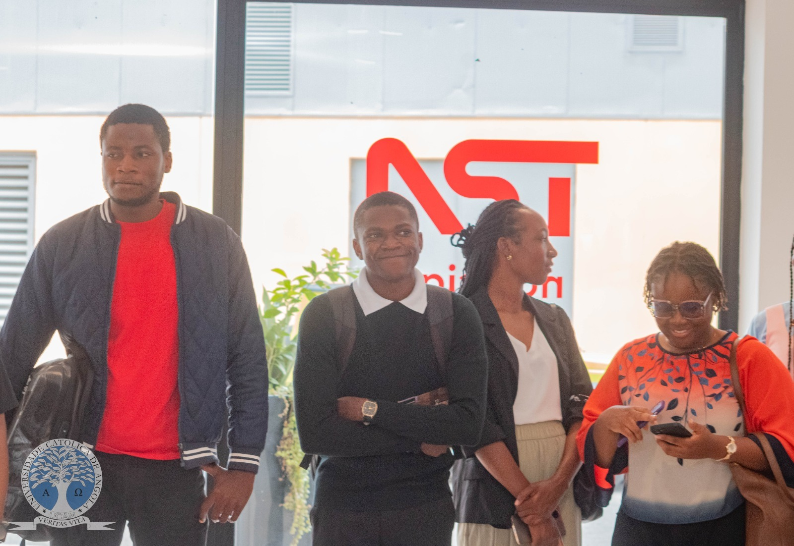

FACULDADE DE CIÊNCIAS HUMANAS REALIZA VISITA ACADÉMICA À TPA
📅 13 de Maio, 2026
A Faculdade de Ciências Humanas da Universidade Católica de Angola (UCAN), por intermédio do Gabinete de Coordenação de Estágios, realizou no dia 13 de Maio do corrente ano, uma visita académica à Televisão Pública de Angola (TPA), numa iniciativa conduzida pela Coordenadora de Estágios, Arieth Francisco Andrade, que contou com presença da Dra. Edvalda (professora do curso de Línguas e Administração).
A actividade contou com a participação de 14 estudantes do curso de Línguas e Administração, proporcionando aos discentes uma experiência de aproximação ao contexto profissional e institucional da comunicação social angolana.
Durante a visita, os estudantes tiveram a oportunidade de conhecer diferentes sectores da TPA, bem como compreender parte do funcionamento interno da estação televisiva. A recepção e o acompanhamento foram assegurados por António Lopes de Carvalho, Técnico de Intercâmbio da TPA, que guiou os participantes ao longo do percurso institucional.
A Televisão Pública de Angola recebeu calorosamente a delegação da UCAN, demonstrando abertura para futuras oportunidades de estágio para os estudantes da instituição.
A iniciativa reforça o compromisso da Faculdade de Ciências Humanas em promover actividades práticas e académicas que aproximem os estudantes do mercado de trabalho, fortalecendo a formação profissional e a integração entre a universidade e as instituições públicas do país.
Segundo a coordenação, perspectivam-se novas visitas institucionais futuramente, visando ampliar as experiências académicas e profissionais dos estudantes.